Created by The Robot In A Can team
In this lesson we will learn how to make some basic games in Snap! First, let's see some examples of types of games you can make. There are lots of different types of games out there.
Use the arrows on your keyboard to control your rocket, and spacebar to shoot and explode asteroids and save the world.
Use your mouse to control the paddel, bounce the ball and break all the bricks!
Type the letters you see on the screen before they hit the ground!
Today we will work on making the keyboard control the sprite. There are many different ways to do this. Let's go over some of the ways you can control your sprite!
1 - Can you make the spaceship move faster? *Hint right now it moves 8 steps at a time*
2 - Can you make the astroids generate faster? *Hint right now the asteriods appear every 3 seconds*
Let's look at how we can control our games using the keyboard or mouse.
The sprites position on the Snap stage is shown as some numbers: One number called 'X' and another called 'Y'
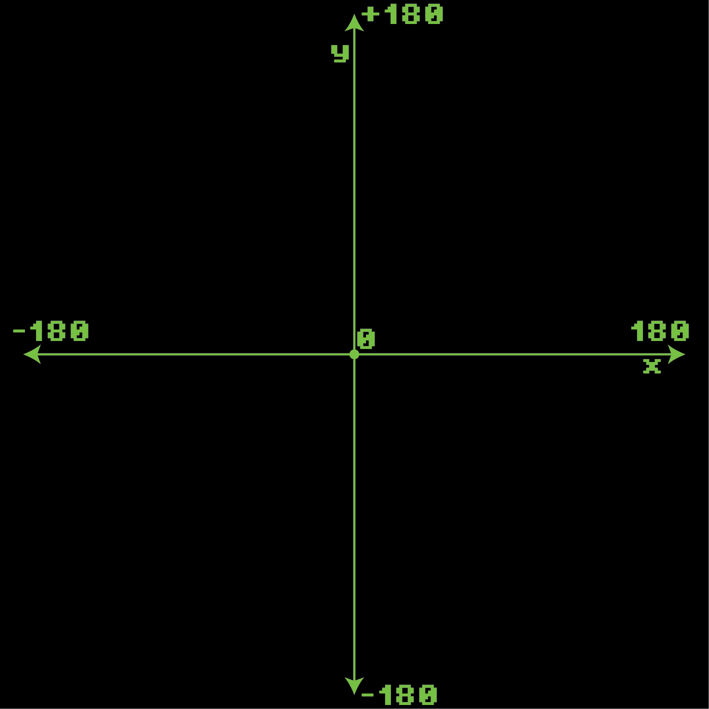The X Axis represents movement from left to right.
It cuts the stage in half Horizontally
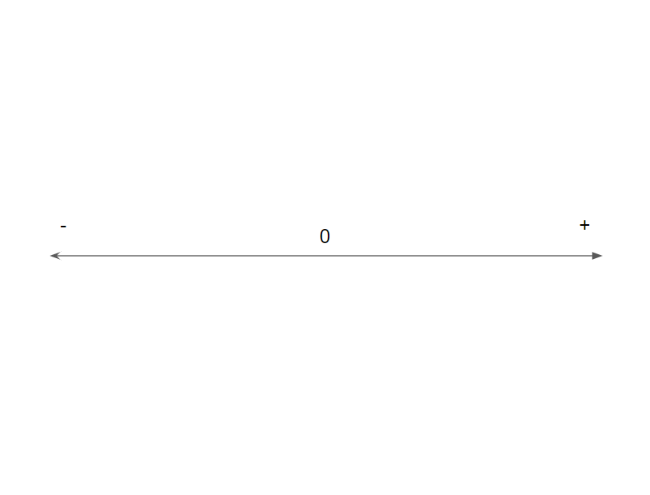The Y Axis represents movement up and down.
It cuts the stage in half Vertically
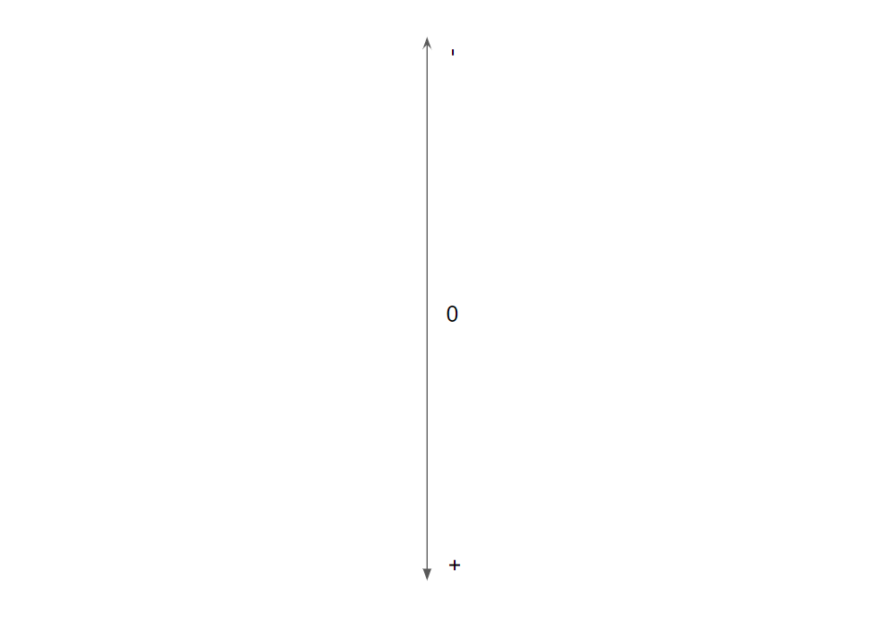
At the center of the stage the position is 0,0
X = 0
Y = 0
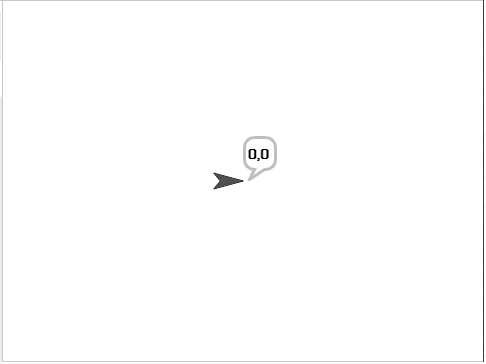
The X Axis represents movement from left to right.
In the photo below we moved the Sprite to position -100 on the X axis.
X = -100
Y = 0
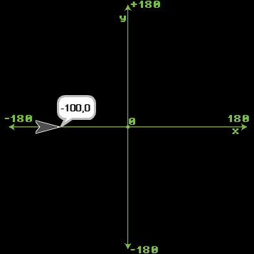
The Y Axis represents movement up and down.
Here we moved Y to position 99, but didn't move X from the center.
X = 0
Y = 99
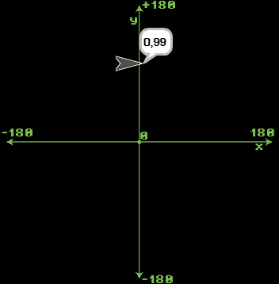
Here we moved Y to position 99, and X to -100. You can move anywhere on the stage with just numbers!
X = -100
Y = 99
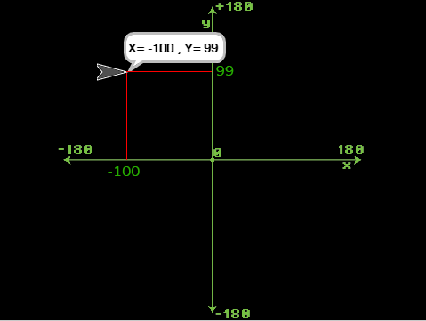Let's move the SPRITE (the arrow guy), on the stage. We will control the spite with the arrow keys on the keyboard to start.
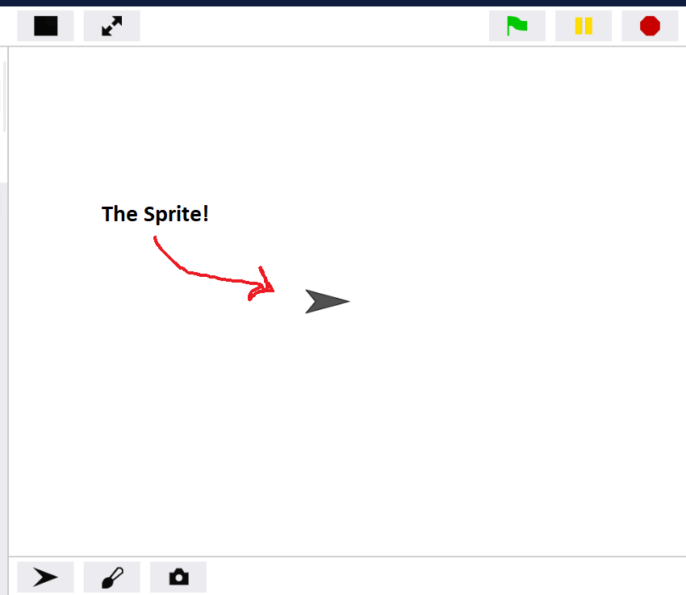Let's start by making the up arrow and down arrows control the Y position. Copy the code below and try it out.
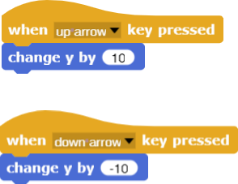Now let's add the left and right arrow keys also, this will add and subtract from the X position.
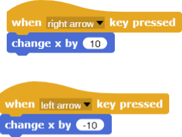The two Axes split the screen up into 4 sections. In the first section (top right quadrant) both numbers X and Y are positive. See if you can find the quadrant where X is negative and Y is also negative. Check out the code in the next slide and see if you can find the double negative quadrant!
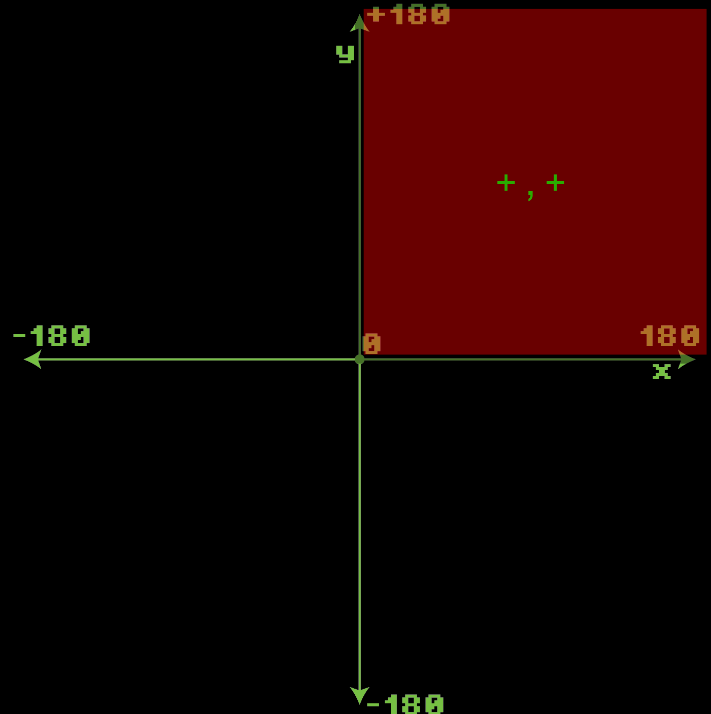Try this example to get familiar with the X and Y axes
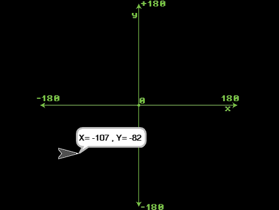
What's the difference between these two blocks?
Try them out on Snap! and see if you can tell what they do differently!
Here is an even better way to control the Sprite
This way points the sprite in the direction you want to move and then moves in that direction.
Here is the code for moving to the right... Can you figure out how to move in the other directions?
Here is the full example code that shows how to point the sprite in the direction it's moving.
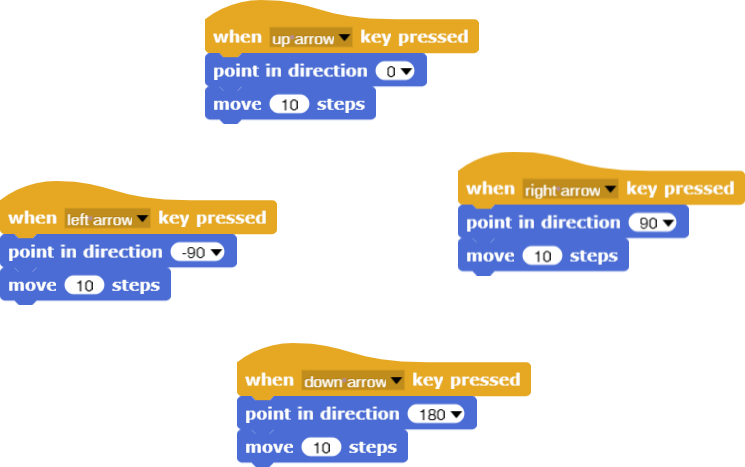Let's start by making a Pong game!
The first prototype of Pong broke down after a couple of days – on further inspection, however, Atari learned the failure was due to too many coins in the unit - as there were so many people playing it!
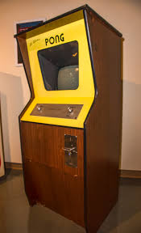Each player controls a paddle and has to bounce the ball in the middle past the other player to score.
Let's make a paddle that moves up and down using the keyboard.
To move up we will add to the Y position, to move down we will subtract from the Y position. Check out the code below.
Let's set a starting position for the paddle
Right now our sprite looks like an arrow, lets draw a new costume quickly for it. Click on costumes.
Click on the paintbrush, then draw a rectangle in the image editor.